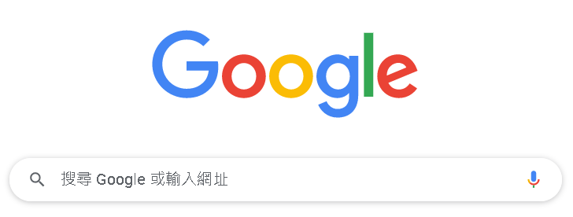
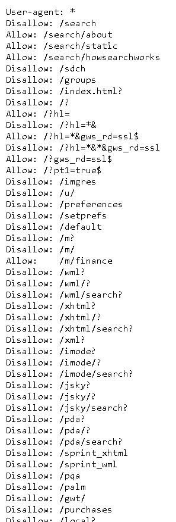

今天要來介紹當我們在爬蟲前，應該要知道的一些技巧與規範
為甚麼需要知道這些爬蟲規範？
首先，我們必須知道過度的網路爬蟲可能是違法的，
如使用多執行緒進行對網站的大量拜訪，在沒有適當的存取時間間隔下，可能會造成一般人熟知的DDOS(Denial-Of-Service Attack)，進而造成其他使用者無法拜訪、甚至是主機癱瘓。
因此，某些網站有制定所謂的「規範」，讓爬蟲使用者能夠去遵守並避免存取到private data
請注意這項規範並不具有強制力，並無法阻擋真正有心攻擊的爬蟲程式。
「規範」— robots.txt
robots.txt是一個告訴爬蟲哪些內容是否可存取的文字檔。
這項檔案通常位於網頁根目錄下的robots.txt，
換句話說，在main-page下加個/robots.txt就能檢視。
舉個例子吧，我們先進到google的首頁

相當正常，不是嗎?
再來利用上面的方法去找robots.txt，
我們接著在.com後面接著/robots.txt，
使網址成為https://www.google.com/robots.txt

成功了！
可是密密麻麻的，打這麼多字誰他媽看得完?
但事實上，這份文字檔可以被拆分成幾個部分，
我們從第一行開始：
1 | 1. User-Agent: * |
User-Agent這一欄代表的是允許的爬蟲類型，而 * 則代表所有的意思，
所以第一行可以被解讀成，允許所有爬蟲拜訪。
此外有一些特別的程式只允許特定爬蟲拜訪網頁，如Googlebot、Applebot等，
如在最後幾行處，可以看到google的網頁允許Twitterbot能夠比一般使用者額外拜訪/imgres的子目錄。
再來我們繼續往下探討，大致上可以分為Allow開頭的，以及Disallow開頭的句子
1 | 2. Disallow: /search |
這句話代表著，拒絕網路爬蟲訪問search子目錄以及其子目錄下所有目錄，
而接下來的第三行，你們應該也就猜的到意思了，就是允許拜訪冒號後面的子目錄。
表頭headers
headers是對client端向server發出請求時的敘述資訊。
有一些網站會針對網路爬蟲進行阻擋，其中一項阻擋的手法就是針對headers，
當網頁收到非瀏覽器的headers發出的請求時，網頁就拒絕client的存取。
解決手段非常的簡單粗暴，既然你拒絕非瀏覽器外的訪問，那我就成為瀏覽器就好了啊!?
那我們要怎麼成為瀏覽器呢?
這樣推薦一個作法：
- 開啟Chrome時按下F12鍵後，先按F5使其重整載入資源，點選其中一項被載入的資源，點選Network欄中的Header，複製其中的Uger-Agent
如此一來就得到瀏覽器的header，將自己偽裝成瀏覽器了。
下一章在requests時，我們會介紹在requests.get()中可以帶入header參數，
在header參數中帶入我們剛剛取得的瀏覽器header，我們就可以成功偽裝了。